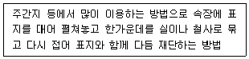
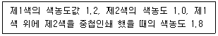
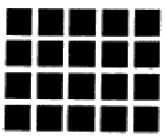
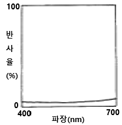
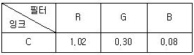
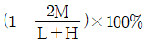
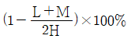
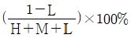
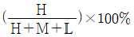
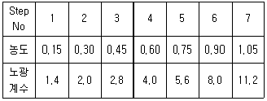

인쇄산업기사 (2005-05-29 기출문제)
1과목: 인쇄공학
1. 평판인쇄에서 인쇄도중 습수통과 습수롤러에서 옅은색이 나타나는 현상은?
- Bleeding
- Collecting
- Caking
- Print through
(정답률: 알수없음)

2. 속장을 싼 표지의 배쪽만 속장보다 크게 하여 안쪽으로 접어 마무리 한 것은?
- 발붙임 표지
- 접음 표지
- 줄냄 표지
- 프랑스 표지
(정답률: 알수없음)
3. 다음 중 주의(력)의 특성이 아닌 것은?
- 주의력을 강화하면 기능은 저하한다.
- 주의는 동시에 두개 방향에 집중하지 못한다.
- 한지점에 주의를 집중하면 다른 지점에 주의력은 약해진다.
- 고도의 주의는 장시간 지속될 수 없다.
(정답률: 알수없음)
4. 택(tack)에 관한 설명 중 틀린 것은?
- 잉크피막의 분열에 대한 저항값이다.
- 인쇄속도가 빨라지면 택은 증가한다.
- 유화가 증가할수록 택은 증가한다.
- 틱소트로피도 잉크택의 변화요인 중의 하나이다.
(정답률: 알수없음)
5. 점탄성의 해석을 위하여 spring과 dashpot 을 이용하는데, spring과 dashpot를 병렬로 연결한 모델은?
- Hookean
- Newtonian
- Maxwell
- Voigt
(정답률: 알수없음)
6. 종이에 적당한 내수성을 주기 위해 콜로이드 물질을 혼합하는 작업은?
- 전충(loading)
- 비팅(beating)
- 윤내기(calendering)
- 사이징(sizing)
(정답률: 알수없음)
7. 다음 설명 중 옳은 제책방식은?

- 양장
- 중철
- 반양장
- 상철
(정답률: 알수없음)
8. 점도계와 레오메타의 주요한 차이점은?
- 측정부와 계산부의 분리 여부
- 점탄성의 측정 여부
- 온도 및 습도 등 외부 조건의 조절 여부
- 컴퓨터의 장착 여부
(정답률: 알수없음)
9. 다음 중 절대 습도를 재는 방법에 대해 바르게 표현한 것은?
- 공기를 냉각시켜 그 속에 함유된 수증기를 포화상태로 만든 후 이슬을 맺게 하고 습도를 구한다.
- 대기 중 포화 상태의 습도를 말한다.
- 현재 온도에서 대기 중 포화된 습도를 말한다.
- 현재온도에 함유된 수증기를 현재 온도에서 1m3 에 함유된 수증기 양에 나누면 절대습도이며, 관계습도라 고도 한다.
(정답률: 알수없음)
10. 다음 인쇄실 내의 작업 환경 중에서 잉크의 점도 변화에 가장 많은 영향을 주는 것은?
- 실내의 온, 습도
- 실내 공기의 청정도
- 실내 환경의 정돈
- 실내의 조명
(정답률: 알수없음)
11. 오프셋 인쇄 과정에서 컬(curl)현상이 발생할 때 가장 적합한 대책은?
- 잉크의 택(tack)을 낮춘다.
- 인쇄시 축임물량을 증가시킨다.
- 인쇄속도를 가능한 만큼 최대로 높인다.
- 잉크의 전이량을 최대로하여 용지의 뒷면에 인쇄한다.
(정답률: 알수없음)
12. 컬러 인쇄에서 오토티피컬 혼색(Autotypical color mixture)의 정의는?
- 빛에 1차색을 모두 혼합하면 검정색이 된다.
- 감색과 가색 혼합이 동시에 일어난다.
- 컬러 인쇄는 일반적으로 네가지 색으로 인쇄한다.
- 색재의 기본색은 빛의 색재와 보색 관계에 있다.
(정답률: 알수없음)
13. 인쇄실내의 불쾌지수는 인쇄 작업자의 능률과 안전에 심각한 영향을 준다. 불쾌지수의 계산과 가장 관계가 깊은 것은?
- 실내 공기의 오염도
- 실내 조명기구의 밝기
- 실내 벽면의 색
- 실내 온도와 습도
(정답률: 알수없음)
14. 원색인쇄에서는 통상 4색의 잉크가 중첩된다. 이 때 중첩되는 효율을 나타내는 방법으로 트래핑(Trapping)효율을 사용하는데 다음 조건에서 트래핑 효율은?

- 30 %
- 40 %
- 50 %
- 60 %
(정답률: 알수없음)
15. 표면가공 중에서 투명도, 광택도 등이 좋고, 대전성이 없고 내유성이 뛰어나며, 장기 보존에 가장 적합한 가공법은?
- 왁스칠
- 비닐칠
- 비닐필름라미네이션
- 광택니스칠
(정답률: 알수없음)
16. 인쇄 문제점인 초킹(chalking)에 관한 설명 중 틀린 것은?
- 잉크 비히클이 너무 많이 종이에 침투한다.
- 신문용지보다 아트지에서 많이 발생한다.
- 잉크의 유화현상이 동시에 발생하였다.
- 겔바니시를 첨가하여 예방한다.
(정답률: 알수없음)
17. 습수가 평판을 적시는 것과 같은 젖음 현상은?
- 확장젖음
- 침적젖음
- 침투젖음
- 부착젖음
(정답률: 알수없음)
18. 인쇄실의 이상적인 조명조건이 아닌 것은?
- 항상 가장 최대의(강력한) 조도를 유지해야 한다.
- 광원이 흔들려서는 안된다.
- 적당한 입체감을 갖는 시야를 만들어야 한다.
- 광색이 작업의 성질과 부합되어야 한다.
(정답률: 알수없음)
19. 인쇄종이의 평활도 시험측정기로서 중앙에 작은 구멍을 뚫은 유리위에 시험조각을 놓고 고무판으로 눌러 흡입시켜 검사하는 것은?
- 글로스미터(gloss meter)
- 잉코미터(inkometer)
- 베크시험기(bekk tester)
- 비스코미터(viscometer)
(정답률: 알수없음)
20. 종이시료를 1⑤ ± 3℃가 될 때까지 건조하고, 건조전과 건조 후의 중량차이를 검사해 알아내는 것은?
- 흡유도
- 수분
- 점도
- 평활도
(정답률: 알수없음)
2과목: 인쇄재료학
21. 도공용 안료로 클레이 보다 중질 탄산칼슘을 많이 사용했을 때, 인쇄 작업시 잉크의 흡수 거동을 옳게 설명한 것은?
- 잉크의 흡수 속도가 빨라진다.
- 잉크의 흡수 속도와 아무 관계가 없다.
- 잉크의 흡수 속도가 느리게 되어 뒷묻음이 발생한다.
- 잉크의 흡수를 방해하지만 잉크 흡수 속도와는 관계가 없다
(정답률: 알수없음)
22. 인쇄용지 4×6전지 1매의 면적(m2)은?
- 0.59
- 0.86
- 1.14
- 1.70
(정답률: 알수없음)
23. 안료 100g이 일정 유동도의 Paste 로 되는데 필요한 기름의 g수로 나타내는 것은?
- 내유화성
- 건조량
- 흡유량
- 유변성
(정답률: 알수없음)
24. 오프셋 인쇄에 있어서 축임물에 대한 인쇄적성 개선과 내수성을 부여하기 위해 도공액에 첨가하는 기능성 첨가제는?
- 접착제
- 내수화제
- 윤활제
- 증점제
(정답률: 알수없음)
25. 잉크의 점도 및 표면장력, 전기 전도도, 노즐 분사구의 메임 등을 고려하여 잉크를 제조하며, 수성잉크와 용제형 잉크로 나눌 수 있는 잉크는?
- 발포잉크
- 액정잉크
- 잉크 젯트용 잉크
- 플렉소 인쇄기용 잉크
(정답률: 알수없음)
26. 제지공정 중 비팅 시간이 길어지면 생기는 현상이 아닌 것은?
- 파열강도가 강해진다.
- 내절강도가 강해진다.
- 인장강도가 강해진다.
- 인열강도가 강해진다.
(정답률: 알수없음)
27. 유제층 내부에 남은 현상액을 중화시켜 현상 반응을 즉시 정지하도록 하는 정지제는?
- Na2S2O3
- Na2SO3
- CH3COOH
- KBr
(정답률: 알수없음)
28. 오프셋 인쇄에서 습수액의 역할을 틀리게 설명한 것은?
- 비화선부에 잉크의 불감지화를 목적으로 한다.
- 오염된 비화선부를 세척하는 효과가 있다.
- 잉크의 온도를 낮추는 효과가 있다.
- 잉크의 유화를 억제하는 효과가 있다.
(정답률: 알수없음)
29. 인쇄 잉크의 끈기(tack)를 측정하는 것은?
- 스프레도 미터
- 잉코미터
- 쟌컵미터
- 펀드 크립토 미터
(정답률: 알수없음)
30. PS판의 특징을 잘못 설명한 것은?
- 재현성이 우수하다.
- 표준화하기가 어렵다.
- 처리가 간단 신속히 된다.
- 온도와 습도의 영향을 거의 받지 않는다.
(정답률: 알수없음)
31. 안료의 침강 방지는 물론 분산계의 점도 저하제로 이용되는 잉크용 계면활성제가 아닌 것은?
- 에스테르
- 염산
- 알킬황산염
- 나프텐산염
(정답률: 알수없음)
32. 분자 중에 양이온 활성기와 음이온 활성기를 동시에 가지는 물질은?
- 양쪽성 계면 활성제
- 음이온 계면 활성제
- 양이온 계면 활성제
- 비이온 계면 활성제
(정답률: 알수없음)
33. 잉크건조에 대한 설명 중 옳지 않은 것은?
- 종이의 표면 pH가 낮을수록 건조가 늦어진다.
- 온도가 높을수록 건조가 빠르다.
- 습도가 높을수록 건조가 빠르다.
- 용제의 증기압이 낮을수록 건조가 늦다.
(정답률: 알수없음)
34. 스프링으로 만든 회전자를 잉크 중에 담궈 일정한 속도로 회전시키면서 바늘이 가리키는 눈금판을 읽어 측정하며, 현장에서 가장 간단하게 잉크의 점도를 측정할 수 있는 점도계는?
- 오스트발트 점도계
- 스토머 점도계
- 라와크체크 점도계
- 브룩필드 점도계
(정답률: 알수없음)
35. 고무블랭킷(Blanket)의 필요조건이 아닌 것은?
- 두께가 균일할 것
- 잉크나 물의 흡수율이 좋을 것
- 잉크의 전이성이 좋을 것
- 탄성 복원율이 좋을 것
(정답률: 알수없음)
36. 명실용 필름의 분광감도 특성곡선상에서 최대 감도를 가지는 범위는?
- 320-350nm
- 380-385nm
- 390-400nm
- 420-450nm
(정답률: 알수없음)
37. 스캐너용 필름의 특성이 아닌 것은?
- 노출시간이 짧아 고감도가 요구된다.
- 특정 파장에 대한 충분한 감광 성능이 필요하다.
- 노출된 잠상의 변화가 없어야 한다.
- 컬러스캐너에 의한 색분해시에는 반드시 3색(청,녹,적)의 감도가 있는 필름을 사용해야 한다.
(정답률: 알수없음)
38. 다이크릴판(dycril plate)의 자외선 조사에 의한 화학적 변화는?
- 광중합
- 광분해
- 광발색
- 광이량화
(정답률: 알수없음)
39. 쇄목펄프의 단점은?
- 잉크의 흡수율이 낮다.
- 섬유가 투명하다.
- 탄력이 풍부하지 않다.
- 내구성이 없다.
(정답률: 알수없음)
40. 무공해로 알려진 수성그라비어 방식에서 잉크의 건조를 위해 용제 대신 주로 첨가하는 약품은?
- 메틸 에텔
- 이소프로필 알콜
- 그리세롤
- 폴리비닐 알콜
(정답률: 알수없음)
3과목: 인쇄색채학
41. 색상의 강약에 대한 시지각적인 특성을 말하는 것은?
- 명도
- 채도
- 색지각, 색감각
- 색입체
(정답률: 알수없음)
42. 청색(Blue)인쇄물은 3원색 잉크 중에서 주로 어떤 잉크가 인쇄된 것인가?
- Cyan잉크와 Yellow잉크
- Magenta잉크와 Cyan잉크
- Yellow잉크와 Magenta잉크
- Cyan잉크, Magenta잉크 그리고 Yellow잉크
(정답률: 알수없음)
43. 위험이나 긴급 전달을 목적으로 많이 활용하는 색으로 주목성이 높고 시인도도 우월한 색은?
- 빨강
- 노랑
- 파랑
- 주황
(정답률: 알수없음)
44. 다음 그림과 같이 두 색이 이웃해 있을 때 경계 부분에서 대비현상이 다른 곳 보다 더 강하게 일어나는 현상은?

- 보색대비
- 연변대비
- 채도대비
- 명도대비
(정답률: 알수없음)
45. 다음 그림의 분광반사율은 어떤 색을 나타내는가?

- 노랑
- 검정
- 파랑
- 빨강
(정답률: 알수없음)
46. Munsell 표색기호 PB의 우리말 색상은?
- 자주
- 연두
- 청록
- 남색
(정답률: 알수없음)
47. 먼셀기호의 색표기법으로 맞는 것은? (단, H:색상, V:명도, C:채도)
- HV/C
- VH/C
- CH/V
- HC/V
(정답률: 알수없음)
48. 색료혼합의 2차색이 아닌 것은?
- 황색
- 적색
- 녹색
- 청자색
(정답률: 알수없음)
49. CIE 표준광에서 색온도는 2856K 정도로서 가스가 들어있는 텅스텐 전구의 빛을 대표하는 표준광은?
- 표준광 A
- 표준광 B
- 표준광 C
- 표준광 D
(정답률: 알수없음)
50. 색의 대비를 동시대비와 계시대비로 나눌 때 동시대비에 해당되지 않는 것은?
- 색상대비
- 채도대비
- 잔상대비
- 보색대비
(정답률: 알수없음)
51. 색채에 있어 시각 반응 중에서 색의 크기에 따라 다르게 나타나는 효과를 무엇이라고 하는가?
- 색의 잔상효과
- 색의 심리보색효과
- 색의 채도대비효과
- 색의 면적효과
(정답률: 알수없음)
52. 병치혼색과 가장 관계가 없는 것은?
- 인상파 화가의 점묘법
- 컬러 TV
- 직물
- 무대조명
(정답률: 알수없음)
53. 흑체(black body)를 가열했을 때 복사되는 빛을 그 흑체의 절대온도로 표시한 것은?
- 섭씨온도
- 색온도
- 광도
- 복사온도
(정답률: 알수없음)
54. 그라스만의 법칙(Grassmann's law)에서 3량(주파장, 휘도, 순도)을 물체색의 삼속성과 비교한다면 주파장은 어디에 해당 되는가?
- 색상
- 명도
- 채도
- 색입체
(정답률: 알수없음)
55. 눈의 구조에 있어서 색지각과 가장 깊은 관계를 가지고 있는 부분은?
- 간상체
- 추상체
- 홍채
- 초자체
(정답률: 알수없음)
56. C잉크로 인쇄된 부분을 R.G.B필터를 사용하여 농도를 측정했을 때 다음 표와 같이 나타났다. C잉크의 회색도(％)는?

- 3.75
- 7.84
- 12.75
- 29.41
(정답률: 알수없음)
57. 먼셀표색계의 설명 중 맞지 않는 것은?
- 색상환에서 직경의 양단에 놓인 두 색상은 서로 보색이다.
- 노랑, 파랑, 빨강색 등을 이용한 20색상환이 사용된다.
- 채도는 색상별로 색의 순도가 증가함에 따라 숫자를 높여간다.
- 명도는 무채색에서 W를 0으로, Bk를 10으로 하여 11단계로 나누고 있다.
(정답률: 알수없음)
58. 시료와 표준색표를 나란히 놓고 측정할 때 배경의 영향으로 잘못 측정하기 쉽다. 이러한 현상을 줄이기 위해 사용하는 배경색은?
- 녹색
- 회색
- 노랑색
- 파란색
(정답률: 알수없음)
59. 규정의 색필터에 의하여 어떤 잉크의 색농도를 측정한 결과 최고 농도를 H, 중간농도를 M, 최저농도를 L이라하면 이 잉크의 색상효율은 어떻게 나타내는가?




(정답률: 알수없음)
60. 오스트발트 표색기호 2Rne로 표시했을 경우 백색량을 표시하는 기호는?
- 2
- 2R
- n
- e
(정답률: 알수없음)
4과목: 사진제판공학
61. 감광재료에 노출량이 과다하게 되었을 때 농도가 감소하는 현상은?
- 그라데이션(gradation)
- 이라디에이션(irradiation)
- 할레이션(halation)
- 솔라리제이션(solarization)
(정답률: 알수없음)
62. 그라비어 제판시 부식할 때 일어나는 결점의 하나로 새도우부의 주위에 그 윤곽에 따라 밝은 무늬나 그림자가 생기는 현상은?
- 코팅(coating)
- 비네팅(vignetting)
- 헤일로(halo)
- 고스트이미지(ghost image)
(정답률: 알수없음)
63. 입사광의 세기를 100으로 했을 때 반사광의 세기가 25라면 반사농도는 얼마인가?
- 0.5
- 0.6
- 0.7
- 0.8
(정답률: 알수없음)
64. Contrast에 대한 설명 중 옳지 않은 것은?
- 넓은 뜻으로 상태 또는 계조라고 한다.
- 일반적으로 특성곡선의 경사도이다.
- 감마(γ)값이 적은 것을 경조, 큰 것을 연조라고 한다.
- 감색성, 감도와 함께 중요한 사진 특성중의 하나이다.
(정답률: 알수없음)
65. 노출된 감광재료를 장시간 보존하여 두면 할로겐화은이 변화를 일으켜 현상 후 소정의 농도가 변화되는 현상은?
- 솔라리제이션
- 감감 현상
- 이레디에이션
- 잠상퇴행 현상
(정답률: 알수없음)
66. 분광분포가 천연주광과 가깝고 휘도가 높은 광원으로 전압이 크게 변해도 광질이 변하지 않고 색성분에도 변화가 거의 없으며 촬영용, 빛쬠용, 색분해용 등에 적합한 광원은?
- 수은 램프
- 할로겐 램프
- 크세논(xenon) 램프
- 텅스텐 램프
(정답률: 알수없음)
67. 교정인쇄에 대해 설명한 것이다. 옳지 않은 것은?
- 인쇄작업자가 표준원고로 삼아 인쇄하는 인쇄용원본이라고 할 수 있다.
- 정확한 컬러를 예측하기 위해 만들어진다.
- 발주자에게 최종 인쇄물을 예측하게 해준다.
- 디자인 단계에서 만들어 발주자에게 보여주는 것이 원칙이다.
(정답률: 알수없음)
68. 입체 인쇄의 제판작업과 관계가 없는 것은?
- 입체 정보가 기록된 컬러 필름을 원고로 하여 색분해한다.
- 스크린 선수는 300선/인치 보다 낮은 선수를 사용해야 한다.
- 렌티큘러 렌즈의 피치 때문에 무아레가 나타날 수 있으므로 주의한다.
- 원판에서 면붙임을 하는 것이 바람직하다.
(정답률: 알수없음)
69. PS판 제판시 스텝가이드를 놓고 40초를 노출하여 5단계가 하얗게 빠졌다면 7단계가 하얗게 되는데 필요한 적정 노출량은

- 60초
- 80초
- 100초
- 120초
(정답률: 알수없음)
70. 스캐너 제판에서 오르토크로매틱 필름에 사용하는 레이저광은?
- Ar 레이저
- He-Ne 레이저
- YAG 레이저
- He-Cd 레이저
(정답률: 알수없음)
71. 컬러원고를 색분해 할 때 일반적인 잉크(yellow,magenta, cyan)는 빛에 대한 흡수나 반사가 완전하지 못하여 이상적인 색재현이 어려운데 이러한 잉크의 결점을 보정하는 작업은?
- 색증감
- 색자극
- 색순응
- 색수정
(정답률: 알수없음)
72. 교정 인쇄용 필름을 출력하기 위하여 포스트스크립 데이터를 픽셀요소로 변환하는 변환기(하드웨어 또는 소프트웨어)는 무엇인가?
- RLP
- RIP
- OPI
(정답률: 알수없음)
73. 흐림마스크(unsharp mask)의 특징이 아닌 것은?
- 마스크 화상이 불선명하면 원고와의 경계선이 분명하지 않기 때문에 좋지 않다.
- 겉보기상의 선예도가 증가한다.
- 마스크와 원고의 레지스터 맞춤이 용이하다.
- 일반적으로 원고의 확대율이 크면 흐림의 정도는 작게 하고 확대율이 낮으면 흐림의 정도는 크게 한다.
(정답률: 알수없음)
74. 태양광을 프리즘을 통하여 분광하면 여러가지 파장에 따른 색광이 나타난다. 색광과 개략적인 파장 영역이 가장 옳게 짝지어진 것은?
- 빨강 – 412nm
- 노랑 - 575nm
- 녹색 – 330nm
- 파랑 - 800nm
(정답률: 알수없음)
75. 깊이가 같고 망점의 크기로서 농도를 나타내는 그라비어는?
- 직접 망점 그라비어
- 덜젠 그라비어
- 전자조각 그라비어
- 컨벤셔널 그라비어
(정답률: 알수없음)
76. 스크린 제판시 감광액을 도포한 후 빛쬠, 현상을 할 때 비화선부의 일부분이 떨어져 나가는 현상이 생긴다. 이 때의 원인과 관계가 먼 것은?
- 노출이 부족할 경우
- 노출이 과다할 경우
- 불량한 감광액을 사용했을 경우
- 감광액이 두껍게 도포되었을 경우
(정답률: 알수없음)
77. 스크린 제판에 사용되는 감광액이 갖추어야 할 조건이 아닌 것은?
- 스크린 망사에 접착성이 강해야 한다.
- 각종 잉크와 용제에 견뎌야 한다.
- 화선을 잘 재현시킬 수 있어야 한다.
- 컬러를 다양하게 변화시킬 수 있어야 한다.
(정답률: 알수없음)
78. 컴퓨터 편집작업에서 사용되는 편집전용 응용프로그램이 갖추어야 할 조건에 해당되지 않는 것은?
- 편집된 문장에서 단어 바꾸기 기능이 있어야 한다.
- 한글을 모두 표현하기 위해 완성형만을 지원해야 한다.
- 글자의 크기나 간격의 미세 조절 기능이 있어야 한다.
- 파일간의 그래픽 문자 등의 복사 이동이 자유로워야 한다.
(정답률: 알수없음)
79. 스캐너에 있어서 윤곽강조를 할 경우 원고가 지닌 입상성에 충분히 주의할 필요가 있다. 틀린 것은?
- 유제의 감광성이 높을수록 입상성이 우수하다.
- 색소운이 클수록 입상성이 떨어진다.
- 유제층이 두꺼울수록 입상성이 떨어진다.
- 입상성에 관한 시각감도는 색판에 따라 다르다.
(정답률: 알수없음)
80. 감광재료가 피사체를 어느 정도 선예하게 재현시키는지 능력의 한계를 숫자적으로 나타낸 것은?
- 솔라리제이션
- 입상성
- 해상력
- 콘트라스트
(정답률: 알수없음)